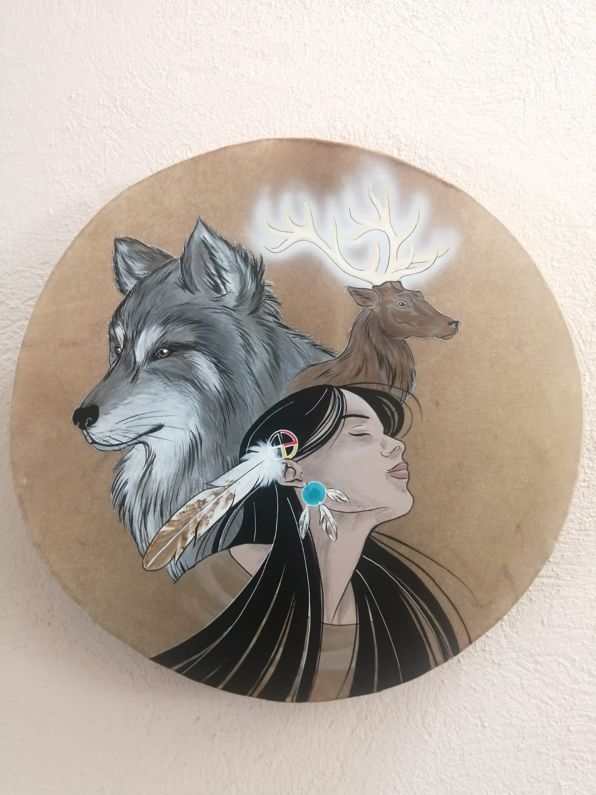

Questions & Reponses

- Oui car la Formation en Chamanisme Blanc s’adresse à tous et commence par les bases, vous apprendrez à réaliser un voyage chamanique en sécurité et à développer vos sens (clairvoyance, clairaudience, ressentis..) petit à petit puis vous verrez l’apprentissage des soins.
- Les modules de chamanisme « vert" et « avancé » sont des compléments facultatifs à la formation de base du chamanisme blanc de guérison. Vous devez donc d’abord maîtriser le chamanisme blanc avant de suivre un des modules complémentaire ou les deux.
- Il y a beaucoup de manières d’enseigner, c’est pourquoi lorsque j’ai souhaité former, j’ai suivi plusieurs fois le même cursus avec différents chamans car j’ai remarqué que régulièrement certains détails manquaient selon les enseignants qui se concentraient sur leurs spécialités.
- Je privilégie donc le fait de suivre la formation complète pour découvrir tous les concepts qui ont pu nous échapper et ainsi recueillir l’enseignement le plus complet possible.
- Oui bien sûr, à tout moment vous pouvez garder les outils que vous avez appris et en rester là. Il suffit de me prévenir sans en motiver la raison. Vous pourrez reprendre plus tard ou arrêter définitivement.
- Tout à fait car cette formation est très complète, nous partons des bases du chamanisme, jusqu’à l’accompagnement des personnes à soigner en passant par l’apprentissage des protocoles de soins.
- Nous ne cherchons pas à devenir un Maître chaman comme un chaman traditionnel mais un praticien en chamanisme capable de soigner le corps et l'âme avec beaucoup d'outils du néo-chamanisme. Cette formation est très complète et permets de suivre un enseignement pendant 18 mois pour le cursur entier. Ce qui est déja beaucoup plus que d'autres enseignements en France.
- A la base il n’y avait que des enseignements en présence, nous avons constaté plusieurs problèmes qui nous ont conduit à créer cette formation en visio:
- Tout le monde n’a pas la capacité de se libérer pour venir plusieurs jours sur place, ce qui demande de l’organisation familiale, professionnelle et financière.
Le temps d’attente entre les stages sont souvent long et on risque de perdre l’habitude de pratiquer au quotidien
Entre les stages nous nous retrouvons souvent seuls avec nos questions
- La formation en visio permets:
- L’échange par petits groupes
De garder un rythme d’apprentissage chaque semaine
De mieux s’organiser pour notre apprentissage, 2h par semaine plutôt que plusieurs jours d’affilé
De mieux organiser ses finances et économiser les déplacements, logement..
D’organiser des journées rencontre afin de se retrouver tous ensemble et s’entrainer en présence
D’instaurer la spiritualité du chamanisme dans notre vie quotidienne.
- Avant chaque début de session, nous choisissons un créneau idéal pour tous, ainsi l’horaire convient forcément à tout le monde, je m’adapte à chaque groupe et aux contraintes de chacun.
- Et si vous ne trouvez aucun créneau possible, il reste la solution de la plate forme de formation avec les vidéos individuelles.
Ainsi vous suivez quand vous le pouvez mais vous n’êtes pas en direct.
- Je suis là tout de même pour répondre à vos questions.
- Bien sûr je suis une entreprise déclarée et je paie mes charges légalement.
- Vous pouvez donc recevoir des factures si besoin.
- Non car elles s’adressent à un public de particuliers, cependant il existe des facilités de paiement.
- J’ai été formé par plusieurs chamans traditionnels:
Une Chamane de Sibérie qui pratique depuis 30 ans enseignant le principe des 3 mondes invisibles et du voyage chamanique
Un Chaman de Mongolie pratiquant le principe des 5 mondes et de l’incorporation, de la lignée de Grand mère Ayengat
Une Chamane à influence Lakota (Sioux)
Une Chamane de l’école de Michael Harner
Un Chaman de Laponie pratiquant le chamanisme préhistorique
Et j’ai vécu plusieurs années avec un Lakota.
C’est un ensemble de ces enseignements que je transmets avec gratitude.
PLATON
On ne peut guérir la partie sans soigner le tout. On ne doit pas soigner le corps séparé de l'âme, et pour que l'esprit et le corps retrouvent la santé, il faut commencer par soigner l'âme.

Cette formation est destinée aux personnes souhaitant s'investir vers un réel changement de vie dans la spiritualité du chamanisme au quotidien, aux thérapeutes souhaitant compléter leurs soins ou aux personnes appellées a réaliser leur mission de vie en tant que chaman.